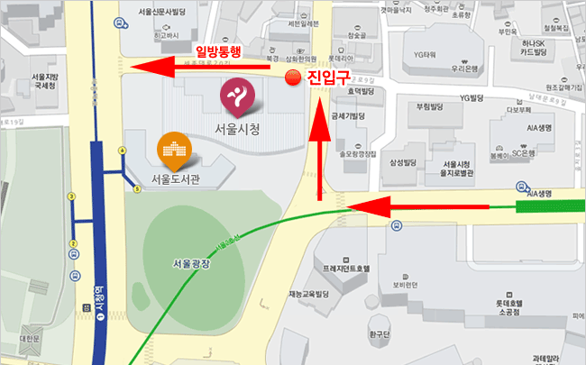

주요 컨텐츠
찾아오시는 길
| 주소 | 서울특별시 중구 세종대로 110 |
|---|---|
| 전화번호 | 02) 120 |
| 팩스 | 02-2133-4904 |
| 시청 이용시간 | 월~금 09:00~18:00 |
| 지하철 | 1호선 또는 2호선 시청역 ⑤번 출구 |
| 공항버스 | 6001, 6002, 6005, 6015, 6701 |
| 간선버스 | 101, 150, 402, 405, 501, 506 |
| 지선버스 | 172, 472, 504, 700, 1020, 1711, 7016, 7017, 7018, 7019, 7022 |
| 광역버스 | 9703, 9714, 9714 |
| M버스 | M4101, M4102, M4108, M5107, M5115, M7106, M7111 |
| 직행버스 | 1000, 1100, 1150, 1200, 1900, 2000, 9001, 9003, 9300, 9301 |
서울시청 주차장 안내
- ◎ 주차공간이 많이 부족하오니 되도록 대중교통을 이용해 주시기 바랍니다.
- ◎ 주차정보안내시스템(http://parking.seoul.go.kr/)에서 실시간 주차 가능면을 확인하실 수 있습니다.
- ◎ 청사 시설물을 보호하기 위해 높이 2.3m 이상 차량은 주차장으로 진입할 수 없습니다.
- ◎ 개방시간 : 매일 07:00~21:00(직원 05:00~23:00, 그 외 시간 청사 방호를 위해 출·입구 폐쇄)
- ◎ 주차요금 : 10분당 1,000원 (평일 09:00~18:00만 부과)
- ◎ 위치 : 지하 4층(101면)

| 할인 및 면제 | 대상 | |
|---|---|---|
| 할인 | 80% | 장애인 |
| 국가유공자 | ||
| 고엽제후유의증환자 차량 | ||
| 50% | 경형승용차 | |
| 저공해차량 | ||
| 「다둥이 행복카드」 소지자차량 중 3자녀 이상 | ||
| 30% | 「다둥이 행복카드」 소지자차량 중 2자녀 | |
| 면제 | 공무수행 로고를 부착한 관용차량 | |
| 언론기관 로고 부착 등 외관상 식별이 가능한 보도차량 | ||
| 국회의원, 시·구의원 차량 | ||
| 외국사절 등 외빈차량, 단체견학차량, 물품납품 화물차량 | ||